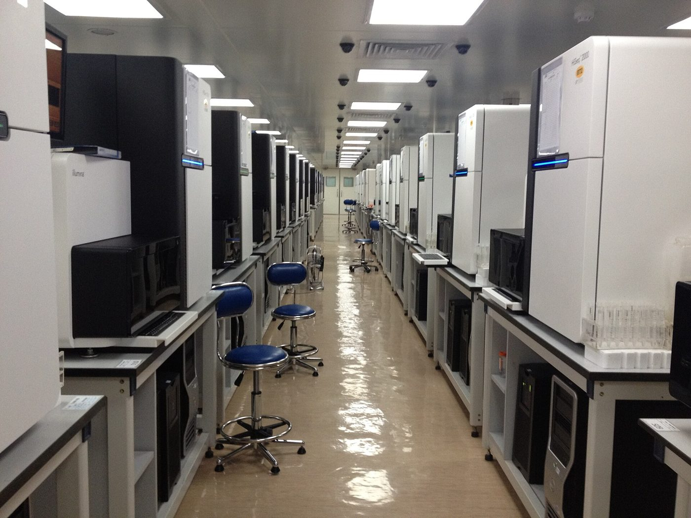
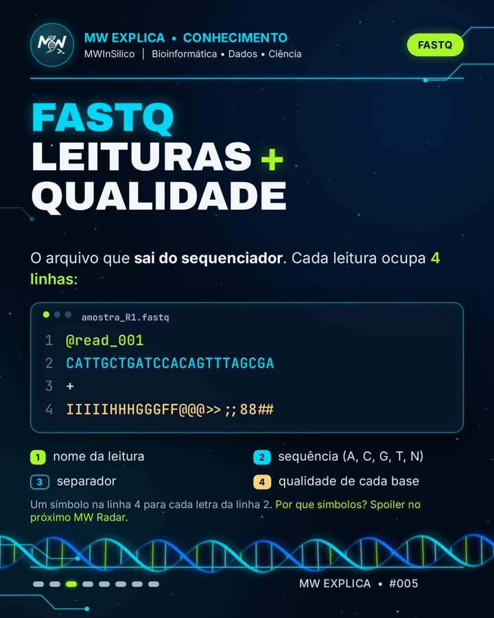
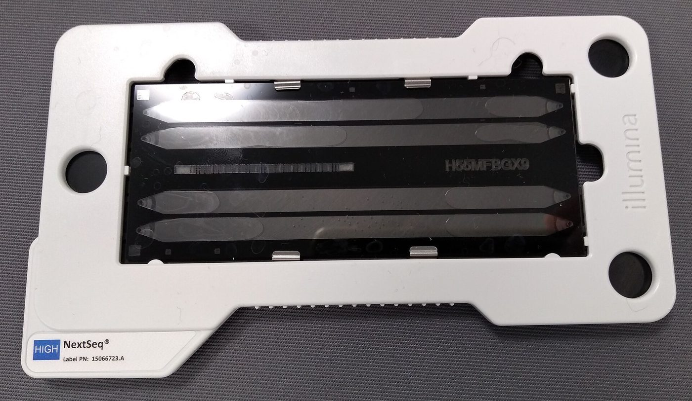
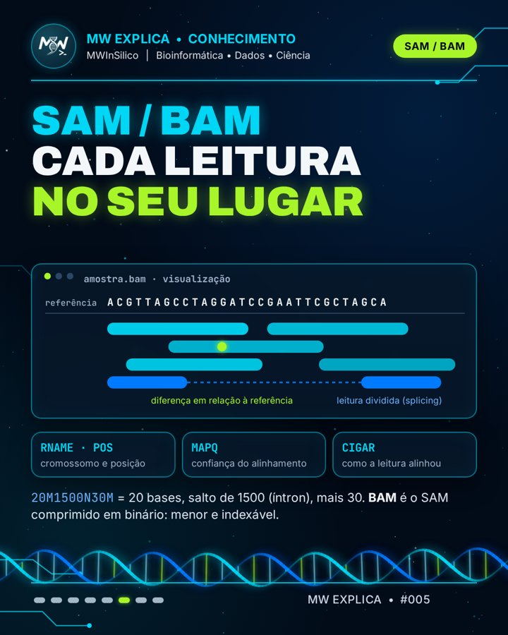

🗂️ Os arquivos do RNA-Seq: FASTQ, FASTA, GTF, BAM e a matriz de contagens¶
Toda análise de RNA-Seq é uma sequência de conversões de arquivo. Saber o que cada um guarda é o que permite entender, e depurar, qualquer pipeline.
Para quem tem pressa
O sequenciador entrega FASTQ: milhões de leituras curtas, cada uma com a qualidade de cada base. Para dar sentido a elas, usamos duas referências públicas: o genoma em FASTA (a sequência) e a anotação em GTF (onde estão os genes). O alinhador posiciona cada leitura no genoma e grava o resultado em SAM/BAM. Por fim, contamos quantas leituras caíram em cada gene e chegamos à matriz de contagens (genes × amostras), que é a entrada da análise estatística com ferramentas como o DESeq2.
Este é o primeiro post do ciclo "O que sai do sequenciador". Os próximos mostram como abrir esses arquivos no terminal Linux, como inspecionar um FASTQ real e por que a qualidade é escrita com símbolos.
Sumário¶
- O caminho dos dados
- FASTQ: leituras e qualidade
- FASTA: a sequência de referência
- GTF: o mapa dos genes
- SAM e BAM: cada leitura no seu lugar
- A matriz de contagens
- Tabela-resumo
- Teste seus conhecimentos
- Referências
O caminho dos dados¶


Num experimento de RNA-Seq, o RNA extraído vira uma biblioteca de cDNA, que é sequenciada (veja RNA-Seq bulk). A partir daí, tudo é dado: cada etapa do pipeline lê um formato de arquivo e escreve outro.
flowchart LR
S[Sequenciador] --> FQ[FASTQ<br/>leituras + qualidade]
FA[FASTA<br/>genoma de referência] -.-> AL((alinhamento))
FQ --> AL
AL --> BAM[BAM<br/>leituras posicionadas]
GTF[GTF<br/>anotação dos genes] -.-> CT((contagem))
BAM --> CT
CT --> M[Matriz de contagens<br/>genes × amostras]
M --> DE[Expressão diferencial<br/>DESeq2]As linhas contínuas são os seus dados, que mudam de formato a cada etapa. As tracejadas são referências públicas, baixadas de bancos como o Ensembl ou o GENCODE, que precisam ser da mesma versão entre si.
O erro mais comum de iniciante
Usar um genoma FASTA de uma versão (por exemplo, GRCh38) com um GTF de outra (GRCh37/hg19). As coordenadas não batem, e o resultado sai errado sem nenhuma mensagem de erro. Baixe sempre o FASTA e o GTF do mesmo lançamento.
FASTQ: leituras e qualidade¶
O FASTQ é o arquivo que sai do sequenciador. Ele guarda cada leitura (read) e, junto dela, a confiança do equipamento em cada base lida1. Cada leitura ocupa exatamente quatro linhas:
@A00123:8:H5KJ2DSXY:1:1101:10004:1000 1:N:0:ATCACG
CATTGCTGATCCACAGTTTAGCGA
+
IIIIIHHHGGGFF@@@>>;;88##
- Identificador, começando com
@. Nos equipamentos Illumina atuais, ele codifica o instrumento, a corrida, a flow cell, a posição do cluster e o número da leitura (1 ou 2). - Sequência das bases: A, C, G, T ou N (base não identificada).
- Separador
+, às vezes seguido de uma cópia do identificador. - Qualidade: um caractere para cada base da linha 2.
Como ler a linha de qualidade¶
Cada caractere representa um escore Phred (Q), definido pela probabilidade P de a base estar errada2:
Q = −10 × log₁₀(P)
Q10 significa 1 erro em 10, Q20 significa 1 em 100 e Q30, 1 em 1.000. Para caber em um único caractere, o valor é somado a 33 e gravado como o símbolo ASCII correspondente (codificação Phred+33). Assim, I (ASCII 73) vale Q40, e # (ASCII 35) vale Q2.
Clique em qualquer base abaixo para decodificar a qualidade:
Por que +33?
Os primeiros 32 códigos da tabela ASCII são caracteres invisíveis (quebra de linha, tabulação etc.), e o 32 é o espaço. Começar no 33 (!) garante que todo escore vire um símbolo imprimível. Equipamentos Illumina antigos (versões 1.3 a 1.7 do pipeline) usavam Phred+64: se um FASTQ antigo parecer ter qualidades absurdas, essa é a primeira suspeita1.

R1, R2 e .gz¶
- Paired-end: quando os dois lados de cada fragmento são sequenciados, cada amostra tem dois arquivos,
_R1.fastq.gze_R2.fastq.gz. A leitura de número n do R1 é o par da leitura n do R2, por isso os dois arquivos nunca devem ser ordenados ou filtrados separadamente. - Compressão: FASTQ quase sempre vem comprimido com gzip (
.fastq.gzou.fq.gz). As ferramentas de bioinformática leem o arquivo comprimido diretamente, então não é preciso descompactar.
FASTA: a sequência de referência¶
O formato FASTA nasceu com o programa de mesmo nome, de busca por similaridade de sequências3. Ele é o formato mais simples possível: uma linha de cabeçalho começando com > e, abaixo, a sequência.
Este é o início real do DNA mitocondrial humano, na sequência de referência revisada de Cambridge (rCRS)4, que também faz parte do genoma de referência GRCh38.


| FASTQ | FASTA | |
|---|---|---|
| Começa com | @ |
> |
| Linhas por registro | sempre 4 | 1 de cabeçalho + quantas forem precisas |
| Tem qualidade? | sim, uma por base | não |
| De onde vem | do seu sequenciamento | de bancos públicos (Ensembl, GENCODE, NCBI) |
| Tamanho típico de cada sequência | 50 a 300 bases (Illumina) | de um gene a um cromossomo inteiro |
Um mesmo arquivo pode conter várias sequências (multi-FASTA): o genoma humano inteiro é um único FASTA com um registro por cromossomo. Para acessar um trecho rapidamente sem ler o arquivo todo, as ferramentas criam um índice .fai (com samtools faidx)9.
Genoma ou transcriptoma?
Alinhadores como o STAR usam o genoma em FASTA. Ferramentas de pseudo-alinhamento, como o Salmon, usam o transcriptoma: um FASTA com a sequência de cada transcrito já processado (sem íntrons). Os dois são baixados dos mesmos bancos.
Já mostramos como baixar um FASTA do NCBI no carrossel MW na Prática #001.
GTF: o mapa dos genes¶
O FASTA diz qual é a sequência do genoma, mas não diz onde estão os genes. Essa informação vem da anotação, distribuída em GTF (Gene Transfer Format) ou no formato irmão GFF356. Cada linha descreve um elemento (gene, transcrito, éxon, CDS…) em 9 colunas separadas por tabulação:
| # | Coluna | Exemplo (TP53) | Significado |
|---|---|---|---|
| 1 | seqname | chr17 |
cromossomo |
| 2 | source | HAVANA |
quem anotou |
| 3 | feature | gene |
tipo do elemento |
| 4 | start | 7661779 |
início |
| 5 | end | 7687538 |
fim |
| 6 | score | . |
não usado na anotação de genes |
| 7 | strand | - |
fita (+ ou −) |
| 8 | frame | . |
fase de leitura (só para CDS) |
| 9 | attributes | gene_id "ENSG00000141510"; gene_name "TP53"; |
identificadores e nomes |
O TP53, o mesmo gene do nosso carrossel sobre o NCBI, fica na fita − do cromossomo 17. Isso significa que ele é lido "de trás para frente" em relação à numeração do cromossomo.
Coordenadas: GTF começa em 1, BED começa em 0
No GTF, a primeira base do cromossomo é a posição 1, e o intervalo inclui o início e o fim. No formato BED, outro muito usado, a contagem começa em 0 e o fim não é incluído. Converter entre os dois sem ajustar gera erros de uma base, difíceis de perceber.
A diferença está só na última coluna: o GTF usa chave "valor"; e o GFF3 usa chave=valor, com relações de parentesco explícitas (Parent=) entre gene, transcrito e éxon.
SAM e BAM: cada leitura no seu lugar¶
O alinhador (STAR, HISAT2, BWA…) pega cada leitura do FASTQ, procura de onde ela veio no genoma FASTA e escreve o resultado em SAM (Sequence Alignment/Map)7. O SAM é texto puro, com um cabeçalho (linhas começando com @) e uma linha por alinhamento, com 11 colunas obrigatórias:
| # | Campo | O que guarda |
|---|---|---|
| 1 | QNAME | nome da leitura (o mesmo do FASTQ) |
| 2 | FLAG | um número que resume o estado da leitura (veja o decodificador abaixo) |
| 3 | RNAME | cromossomo onde ela alinhou |
| 4 | POS | posição da primeira base alinhada (começa em 1) |
| 5 | MAPQ | confiança de que a posição está certa, em escala Phred |
| 6 | CIGAR | como a leitura alinhou: bases iguais, inserções, deleções, íntrons |
| 7–9 | RNEXT, PNEXT, TLEN | onde está o par (em paired-end) e o tamanho do fragmento |
| 10 | SEQ | a sequência da leitura |
| 11 | QUAL | a qualidade, igual à do FASTQ |
O BAM é o mesmo conteúdo, comprimido em formato binário. Ele é bem menor que o SAM e, depois de ordenado por posição e indexado (arquivo .bai), permite ir direto a qualquer região do genoma. É assim que visualizadores como o IGV mostram as leituras de um gene instantaneamente8. Na prática, quase ninguém guarda SAM: o samtools converte, ordena e indexa9.

A FLAG: muita informação num número só¶
A FLAG soma potências de 2. Cada uma é uma pergunta de sim ou não sobre a leitura. Marque as caixas, ou digite um valor, para ver a soma:
Os valores 99 e 147 são os mais comuns num BAM de paired-end: R1 e R2 de um mesmo par, ambos bem alinhados, um em cada fita.
O CIGAR: como a leitura se encaixou¶
O CIGAR descreve o alinhamento como uma sequência de número + letra. 50M significa 50 bases alinhadas. No RNA-Seq, a letra mais importante é o N: um salto no genoma sem bases da leitura, ou seja, um íntron que o splicing removeu. É assim que uma leitura de mRNA maduro aparece "partida" em dois éxons distantes.
E o CRAM?
Projetos grandes usam cada vez mais o CRAM, que comprime ainda mais guardando só as diferenças em relação ao genoma de referência10. A contrapartida: para abrir um CRAM, é preciso ter exatamente o mesmo FASTA usado para criá-lo.
A matriz de contagens¶
O último passo antes da estatística é contar. Para cada amostra, uma ferramenta percorre o BAM e, usando as coordenadas do GTF, decide a qual gene pertence cada leitura. O resultado é uma tabela com uma linha por gene e uma coluna por amostra:
| gene | ctrl_1 | ctrl_2 | trat_1 | trat_2 |
|---|---|---|---|---|
| TP53 | 812 | 790 | 1.640 | 1.702 |
| GAPDH | 15.230 | 14.987 | 15.102 | 15.511 |
| MYC | 402 | 388 | 96 | 110 |
| BRCA1 | 230 | 251 | 244 | 236 |
Valores ilustrativos.
Há três caminhos comuns para chegar a ela:
Contam as leituras de um BAM que caem nos éxons de cada gene do GTF1112. São os métodos clássicos depois de um alinhador como o STAR ou o HISAT2.
O próprio STAR conta as leituras por gene enquanto alinha e grava um arquivo ReadsPerGene.out.tab por amostra13. Basta juntar as colunas de todas as amostras.
O Salmon pula o BAM e estima a abundância de cada transcrito direto do FASTQ. O pacote tximport soma os transcritos por gene e entrega uma matriz pronta para o DESeq214.
Contagens brutas, não normalizadas
O DESeq2 espera contagens brutas: números inteiros, exatamente como saíram da contagem. Ele faz a própria normalização internamente15. Dar a ele valores já normalizados (TPM, FPKM, CPM) quebra o modelo estatístico. Os próximos ciclos do MW Explica vão explicar o porquê.
Tabela-resumo¶
| Arquivo | Extensões | Guarda | Etapa | Como espiar |
|---|---|---|---|---|
| FASTQ | .fastq.gz, .fq.gz |
leituras + qualidade | sai do sequenciador | zcat arquivo.fastq.gz \| head -8 |
| FASTA | .fa, .fasta, .fna |
sequência de referência | referência do alinhamento | head arquivo.fa |
| GTF/GFF3 | .gtf, .gff3 |
posição dos genes | referência da contagem | grep -v "^#" anotacao.gtf \| head |
| SAM/BAM | .sam, .bam (+ .bai) |
leituras alinhadas | sai do alinhador | samtools view arquivo.bam \| head |
| Matriz | .tsv, .csv, .txt |
contagens gene × amostra | entrada do DESeq2 | head contagens.tsv |
Os comandos dessa última coluna são o assunto do próximo post, no MW Toolbox: Terminal Linux para biólogos.
Teste seus conhecimentos¶
1. Quantas linhas ocupa cada leitura em um FASTQ, e o que cada uma guarda?
Quatro: o identificador (começa com @), a sequência, o separador + e a qualidade, com um símbolo por base.
2. Uma base tem o símbolo 5 na linha de qualidade. Qual é o escore Phred dela?
O caractere 5 tem código ASCII 53. Em Phred+33, Q = 53 − 33 = 20, ou seja, 1 chance em 100 de estar errada.
3. Por que não dá para usar o FASTA do GRCh38 com o GTF do GRCh37?
Porque as coordenadas dos genes mudam entre as versões do genoma. As leituras seriam contadas nos genes errados, sem nenhuma mensagem de erro.
4. O que significa a letra N no CIGAR, e por que ela é tão comum em RNA-Seq?
N é um salto no genoma que não consome bases da leitura: um íntron. Como o RNA maduro já não tem íntrons, uma leitura que atravessa a junção entre dois éxons aparece dividida no genoma.
5. Por que o DESeq2 precisa de contagens brutas, e não de TPM?
Porque o modelo estatístico dele (binomial negativa) assume números inteiros de leituras e calcula a própria normalização. Valores já normalizados perdem a informação sobre a profundidade de cada amostra, da qual a estimativa de variância depende.
Referências¶
-
Cock PJA, Fields CJ, Goto N, Heuer ML, Rice PM. The Sanger FASTQ file format for sequences with quality scores, and the Solexa/Illumina FASTQ variants. Nucleic Acids Research. 2010;38(6):1767–1771. doi: 10.1093/nar/gkp1137. ↩↩
-
Ewing B, Green P. Base-calling of automated sequencer traces using Phred. II. Error probabilities. Genome Research. 1998;8(3):186–194. doi: 10.1101/gr.8.3.186. ↩
-
Pearson WR, Lipman DJ. Improved tools for biological sequence comparison. Proceedings of the National Academy of Sciences USA. 1988;85(8):2444–2448. doi: 10.1073/pnas.85.8.2444. ↩
-
Andrews RM, Kubacka I, Chinnery PF, Lightowlers RN, Turnbull DM, Howell N. Reanalysis and revision of the Cambridge reference sequence for human mitochondrial DNA. Nature Genetics. 1999;23(2):147. doi: 10.1038/13779. ↩
-
Mudge JM, Carbonell-Sala S, Diekhans M, et al. GENCODE 2025: reference gene annotation for human and mouse. Nucleic Acids Research. 2025;53(D1):D966–D975. doi: 10.1093/nar/gkae1078. ↩
-
Ensembl. GFF/GTF file format. Documentação oficial: https://www.ensembl.org/info/website/upload/gff.html. ↩
-
Li H, Handsaker B, Wysoker A, et al. The Sequence Alignment/Map format and SAMtools. Bioinformatics. 2009;25(16):2078–2079. doi: 10.1093/bioinformatics/btp352. Especificação atual: https://samtools.github.io/hts-specs/SAMv1.pdf. ↩
-
Robinson JT, Thorvaldsdóttir H, Winckler W, et al. Integrative genomics viewer. Nature Biotechnology. 2011;29(1):24–26. doi: 10.1038/nbt.1754. ↩
-
Danecek P, Bonfield JK, Liddle J, et al. Twelve years of SAMtools and BCFtools. GigaScience. 2021;10(2):giab008. doi: 10.1093/gigascience/giab008. ↩↩
-
Hsi-Yang Fritz M, Leinonen R, Cochrane G, Birney E. Efficient storage of high throughput DNA sequencing data using reference-based compression. Genome Research. 2011;21(5):734–740. doi: 10.1101/gr.114819.110. ↩
-
Liao Y, Smyth GK, Shi W. featureCounts: an efficient general purpose program for assigning sequence reads to genomic features. Bioinformatics. 2014;30(7):923–930. doi: 10.1093/bioinformatics/btt656. ↩
-
Anders S, Pyl PT, Huber W. HTSeq — a Python framework to work with high-throughput sequencing data. Bioinformatics. 2015;31(2):166–169. doi: 10.1093/bioinformatics/btu638. ↩
-
Dobin A, Davis CA, Schlesinger F, et al. STAR: ultrafast universal RNA-seq aligner. Bioinformatics. 2013;29(1):15–21. doi: 10.1093/bioinformatics/bts635. ↩
-
Soneson C, Love MI, Robinson MD. Differential analyses for RNA-seq: transcript-level estimates improve gene-level inferences. F1000Research. 2015;4:1521. doi: 10.12688/f1000research.7563.1. ↩
-
Love MI, Huber W, Anders S. Moderated estimation of fold change and dispersion for RNA-seq data with DESeq2. Genome Biology. 2014;15:550. doi: 10.1186/s13059-014-0550-8. ↩